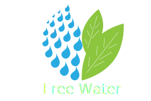

Current position
Water point
Less reliability water point
Few reliability water point
route to the closest point
Publish current position as water point
Confirm water point
Deny water point
Route from current position to water point